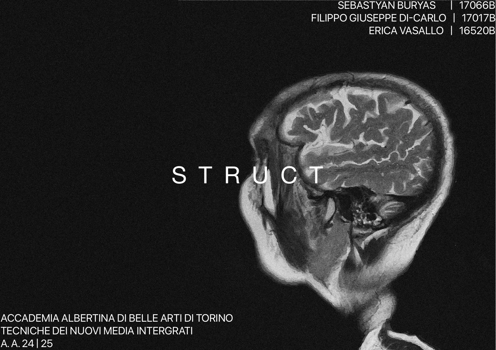
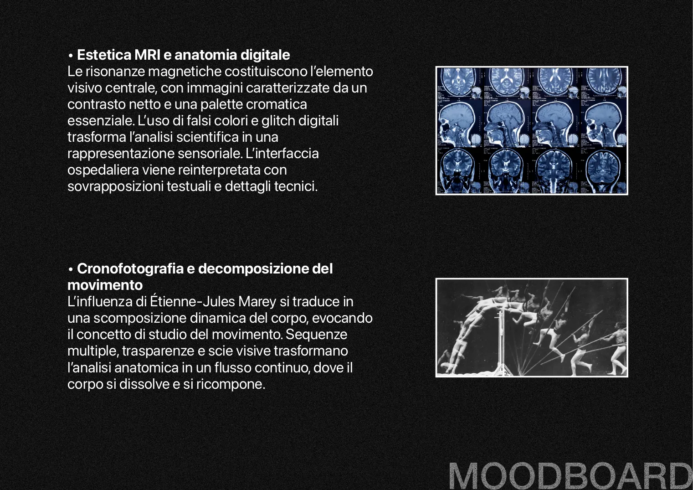
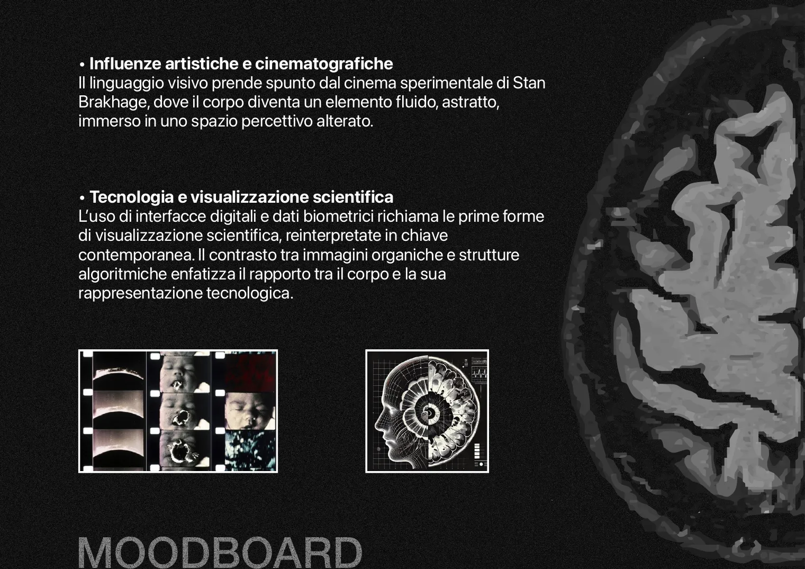
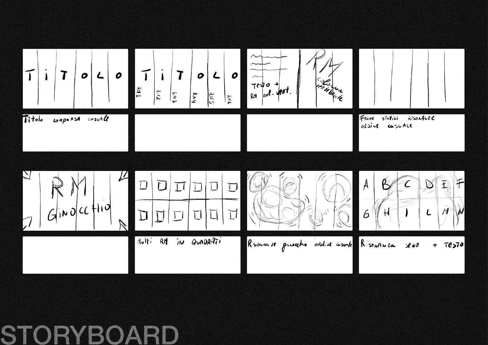
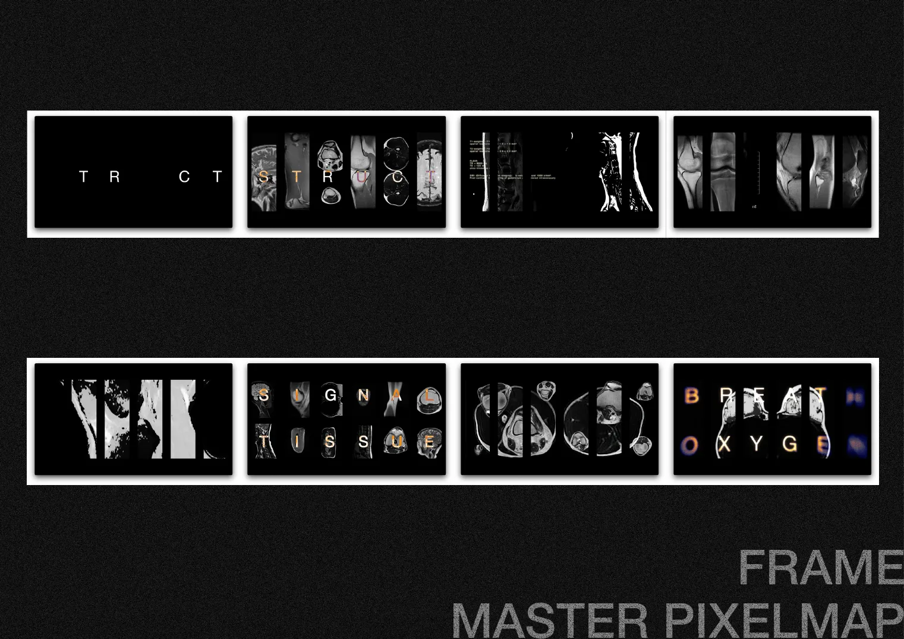

Video sperimentale · progetto di corso, Accademia Albertina · 2024–25
STRUCT
Un'esplorazione visiva del corpo umano, costruita sovrapponendo immagini, texture e parole alle risonanze magnetiche.
Progetto di gruppo con Filippo Giuseppe Di-Carlo ed Erica Vasallo, per il corso di Tecniche dei nuovi media integrati.

Il video
L'idea
L'estetica è costruita su una palette cromatica essenziale e grezza, tipica delle risonanze magnetiche, che dominano la scena. Il video si ispira ai lavori di Étienne-Jules Marey sulla scomposizione e ricomposizione delle dinamiche corporee: un'indagine sul movimento e sulla materialità del corpo, attraverso la lente della tecnologia contemporanea.
L'intento è moltiplicare i punti di vista e scomporre la percezione unitaria del corpo. Le immagini si susseguono e si intersecano, evocando la sperimentazione cronofotografica e lo studio della locomozione umana.
Moodboard
Dove l'estetica scientifica delle risonanze incontra la cronofotografia: immagini stratificate, texture evocative e riferimenti alla tecnologia medica, con il cinema sperimentale di Stan Brakhage sullo sfondo.


Storyboard e frame
Dagli schizzi a mano del titolo e delle griglie di risonanze fino alla pixelmap finale con i frame del video.


Facciamo qualcosa insieme.